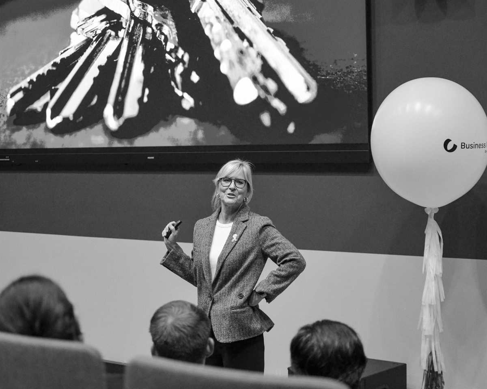
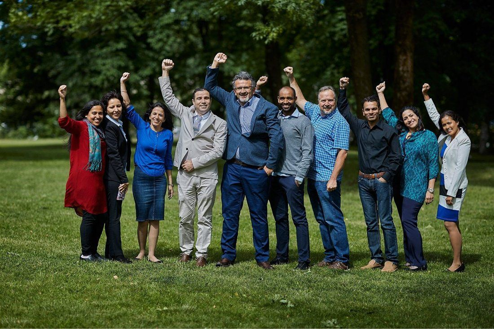
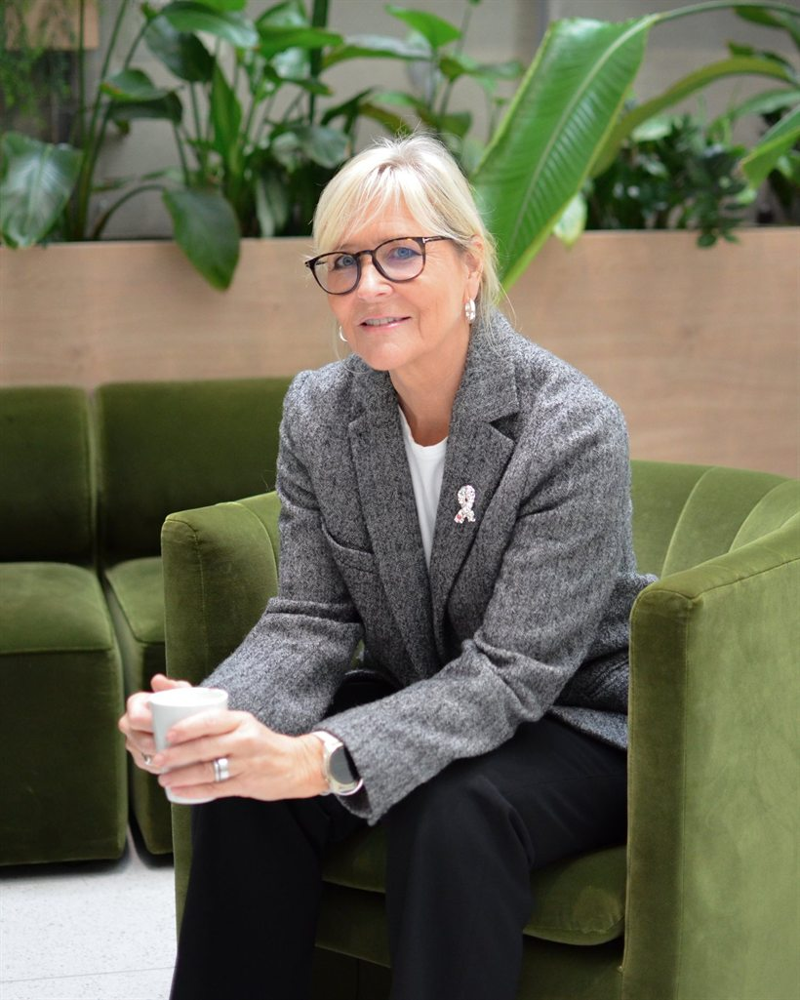

«Ekstremt bra formidling og presentasjon, med mye kunnskap. Bra opplegg hvor jeg lærte mye. 10 av 10 poeng.»
Contento · siden 2016
Utvikling skjer i møtet mellom mennesker.
Contento jobber med ledere, ledergrupper og organisasjoner som vil styrke samspill og kommunikasjon i hverdagen — praktisk og løsningsorientert, med utgangspunkt i virkelige situasjoner og konkrete utfordringer.
Contento AS · Nesbru i Asker
Nær 20 år
Som sertifisert coach
2016
Contento AS etablert
Syv kull
Gjennom Jobbreisen®
Talerlisten
Foredragsholder
Fagområder
Det vi jobber med
Seks innganger til ledelse, samspill og kommunikasjon — alltid med utgangspunkt i deltakernes virkelighet.
-
01
Lederutvikling
Styrker selvinnsikt, kommunikasjon og praktisk lederatferd — individuelt, i ledergrupper og i utviklingsløp over tid.
-
02
Kommunikasjon
Relasjonsbyggende kommunikasjon i ledelse og team, med konkrete situasjoner fra arbeidshverdagen som materiale.
-
03
Kulturbygging
Kulturer som styrker psykologisk trygghet, ansvarlighet og godt samspill — med mangfold som en integrert del av arbeidet.
-
04
Coaching
Gode samtaler som gir klarhet, ro, mot eller retning — tilpasset den enkelte og situasjonen vedkommende står i.
-
05
Kurs og workshops
Innsikt, refleksjon og verktøy som kan brukes i praksis — enten det er en faglig samling eller et lengre utviklingsløp.
-
06
Foredrag og fasilitering
Forskning, erfaring og eksempler fra hverdagen, formidlet engasjerende — og konferansieroppdrag på næringslivs- og temakonferanser.
Coaching
Samtaler som gir retning
Coaching handler først og fremst om gode samtaler — samtaler som kan gi klarhet, ro, mot eller retning når det trengs. Det kan handle om hjelp til å ta vanskelige valg, eller om deling av kunnskap og erfaring der det er relevant.
Lisbeth S. Storli har jobbet som sertifisert coach i nær 20 år, med lederutvikling, kommunikasjonstrening og selvledelse som hovedtemaer. Samtalene tilpasses alltid den enkelte og situasjonen vedkommende står i.
«Lisbeth er klok, tydelig og utfordrende på en trygg måte. Samtalene har gitt meg økt bevissthet rundt rolleforståelse, kommunikasjon og egne valg — og større trygghet i krevende situasjoner.»
Slik arbeider vi
Utforske, involvere, skape fremdrift
Vi fasiliterer arbeidet ved å utforske, involvere og skape fremdrift — slik utvikles eierskap som gir forankring, gjennomføring og bedre resultater.

-
01
Utforske
Vi tar utgangspunkt i virkelige situasjoner og konkrete utfordringer, og undersøker det som faktisk skjer i hverdagen.
-
02
Involvere
Gjennom dialog, involvering og konkrete øvelser skaper vi innsikt, engasjement og aha-opplevelser.
-
03
Skape fremdrift
Eierskap gir forankring, gjennomføring og bedre resultater. Målet er bevegelse og endring over tid.
Jobbreisen®
Mangfold i praksis
Jobbreisen® er et mentoring- og utviklingsprogram for høyt utdannede nykommere som ønsker relevant jobb i Norge — der kompetansen deres tas i bruk.
Syv kull har gjennomført programmet, med deltakere fra flere kontinenter. Det er utviklet og ledes av Lisbeth S. Storli, og er gjennomført i samarbeid med Oslo Business Region.
«Å få relevant jobb i Norge handler om mer enn å ha riktig kompetanse. Det krever kunnskap om rekrutteringsprosessen, innsikt i norsk arbeidskultur, evne til å gjøre seg synlig — og et nettverk som kan åpne dører.»

Omtale
Hva kundene sier
Et utvalg tilbakemeldinger fra ledersamlinger, kurs, workshops og coaching.
«Det beste kurset jeg har vært på på lenge. En veldig inspirerende dag og gode innspill jeg bruker aktivt i hverdagen.»
«En gnistrende formidler som skaper engasjement og entusiasme, både i mindre og større fora.»
«Lisbeth tar rommet på en trygg og energisk måte. Hun løfter gruppen og får frem det beste i oss, med høy faglighet og tydelig formidling.»

Om Contento
Nær 20 år i samtalen
Contento AS ble etablert i 2016 av Lisbeth S. Storli. Før dette arbeidet hun i en årrekke som coach og lederutvikler, både alene og sammen med andre partnere. Tidligere i karrieren jobbet hun med kommunikasjonsrådgivning — som gründer og medgründer, seniorkonsulent og partner i flere byråer.
Arbeidet bygger på forankring i psykologi og ledelse, med skolering og sertifiseringer i anerkjente rammeverk innen endringsledelse, selvledelse, psykologiske typer, kommunikasjons- og læringsstiler, samt coaching og emosjonell intelligens.
Contento bistår ledere og virksomheter i både offentlig og privat sektor — på tvers av bransjer, størrelser og problemstillinger.
- Etablert
- 2016
- Sertifisert coach
- Nær 20 år
- Oppdrag i
- Offentlig og privat sektor
- Foredrag
- På Talerlisten
Gratis introsamtale
Book en samtale
Velg tema, dag og tid som passer. Samtalen er uforpliktende, og vi tar utgangspunkt i situasjonen du står i.
- Du velger tema — lederutvikling, kommunikasjon, kulturbygging, coaching eller Jobbreisen®.
- Du velger en av de ledige dagene og tidspunktene.
- Du får en oppsummering du kan sende på e-post — ingenting sendes automatisk.